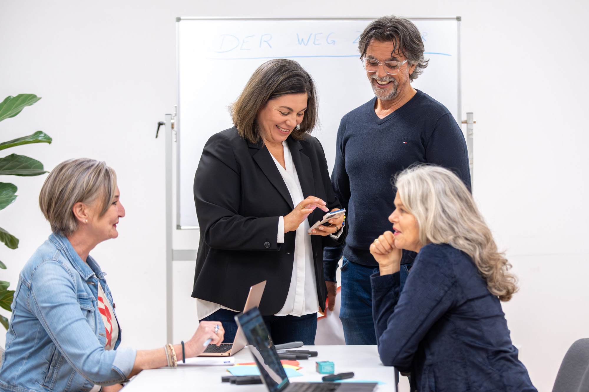

Konzentration
Genau hinschauen, zuhören, unterscheiden und den Fokus bewusst halten.
Gehirntraining für Menschen, die geistig aktiv bleiben und dabei Gemeinschaft erleben möchten – mit Konzentration, Gedächtnis, Kreativität und Freude.

Die „Fröhliche Denkrunde“ verbindet unterschiedliche Denkaufgaben mit Austausch und Gemeinschaft. Nicht Leistung steht im Mittelpunkt, sondern Aktivierung, Neugier und Freude am gemeinsamen Üben.
Genau hinschauen, zuhören, unterscheiden und den Fokus bewusst halten.
Merkfähigkeit, Abruf und unterschiedliche Wege, Informationen im Kopf zu verknüpfen.
Wortfindung, Ideenreichtum und spielerischer Perspektivwechsel.
Deshalb ist unser Gehirntraining bewusst kein Test und kein Leistungsprogramm. Sie schafft einen festen Termin, neue Impulse und einen sozialen Rahmen, in dem Menschen gerne wiederkommen.
Gruppenzeiten, verfügbare Plätze und die aktuellen Konditionen teilen wir Ihnen vor der Anmeldung transparent mit. So können Sie in Ruhe entscheiden, ob die „Fröhliche Denkrunde“ zu Ihnen passt.
Sie fragen unverbindlich nach der aktuell passenden Gruppe.
Sie erhalten die aktuellen Zeiten, Konditionen und alle wichtigen Informationen.
Dann erleben Sie selbst, ob die Mischung aus Denken, Bewegung und Gemeinschaft zu Ihnen passt.
Wir teilen Ihnen den aktuellen Gruppenrahmen und die verfügbaren Zeiten mit.